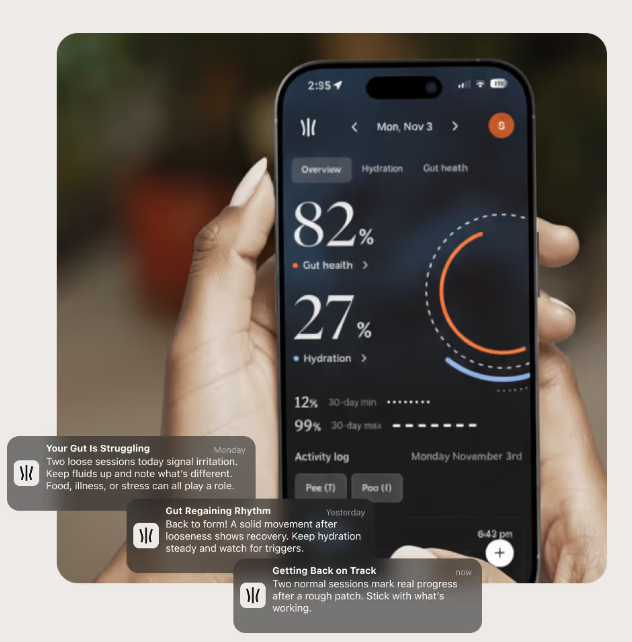
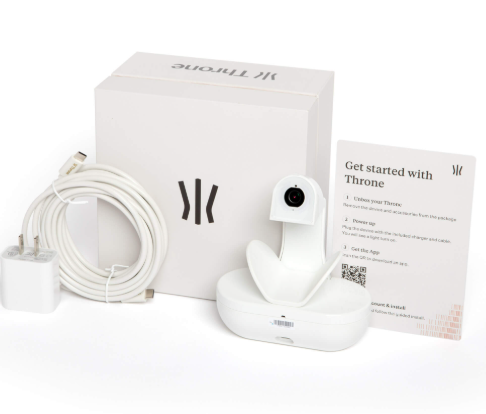

Now your toilet judges you.

Remember when you could proudly — or shamefully — just flush and forget? Not anymore. Meet the Throne One, a camera you install on your toilet that takes pictures of your poop and turns them into data about your gut health, hydration, and digestive rhythm. It’s like a Fitbit for your bowel movements, except instead of counting steps it quantifies your stool. The device clips on quickly, syncs with your phone’s app, and works hands-free every time you visit the loo.
Once installed, Throne uses AI and computer vision to analyze what it sees in the bowl and delivers insights straight to the companion app — things like stool consistency, hydration levels, and gut health trends over time. In other words: what was previously private bathroom business is now a continuous health check-in you didn’t explicitly ask for, but might actually find useful. It aims to help you connect diet, hydration, and symptoms without logging every meal like a medieval monk.
Throne One is currently available for pre-order, and early prices have floated in the ~$299–$499 range depending on timing, with optional companion analytics subscriptions for deeper trends. It’s ambitious — turning your porcelain throne into a wellness coach — and maybe a little weird. But if you’ve ever wondered what your body is trying to tell you without emojis, cartoons, or endless symptom checkers, this might be the gadget that finally listens. Just remember: your toilet doesn’t judge *you*… it just tells your gut’s secrets to your phone.